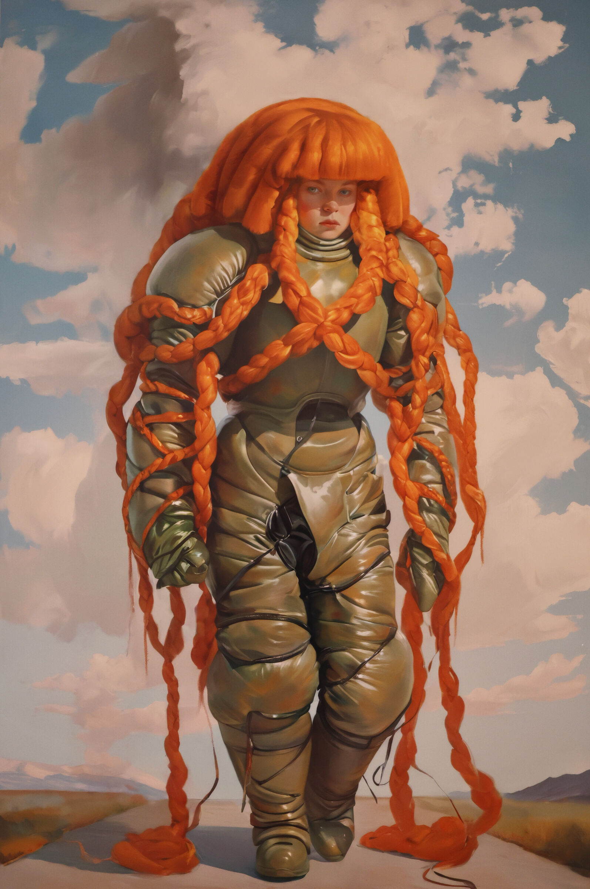

xhairymutantx：把自己的形象训练成一个故障
Holly Herndon 和 Mat Dryhurst 的 xhairymutantx 是为 2024 年惠特尼双年展委约创作的网络艺术项目，也同时以大尺幅热升华转印图像出现在展厅里。它的入口在 Whitney 的 artport 平台上，观众可以输入任意提示词，系统都会生成一种“奇怪版本的 Holly”。
要理解它，先要知道作品的前提：在许多文生图模型中，“Holly Herndon”已经不只是一个真实艺术家的名字，也是一种被模型捕捉到的互联网形象。红发、白皮肤、蓝眼睛、刘海，这些特征会在生成结果中反复出现。艺术家没有只是抗议这种被机器抓取的状态，而是主动设计了一套反向训练：通过夸张发型、服装和身体轮廓，把自己的可识别特征推向变形。

这个项目好看的地方不只是图像怪异，而是它把“训练数据”变成了艺术材料。新生成的图像会进入项目画廊，也可能在未来被新的系统抓取。于是作品不是一张完成的图，而是一种对机器视觉的投毒、诱导和自我重写：艺术家把自己变成模型无法轻松消化的对象。
可以这样看：这不是 AI 帮艺术家画肖像，而是艺术家借 AI 制作一副会扩散的伪装。她不是从模型里夺回一张真实的脸，而是把“可被模型识别的脸”变成不稳定的战场。
项目有在线互动入口，适合直接打开体验输入提示词后的生成逻辑。
进入 xhairymutantx